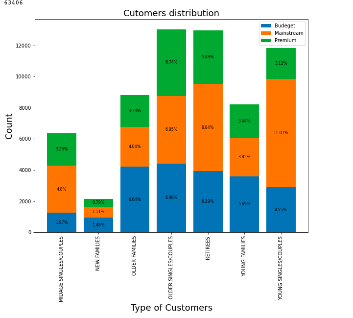

In this project,the customer purchase data and the transaction data have been analysed
in order to perform Customer Segments and Products Variation.
This project is to help Quantium to explore the customer segments so as to determine which
customer segments should be targeting to decide which products should be included in the
future market strategy
This project is divided into three steps:
Examining and Cleaning Data
In this part,data sets were first examinated by Description, then were reformatted and
cleaned by Pandas.During this section,grouping
the data by the product names and I found that in the data set
there are also Salsa products so I dropped all the product string with Salsa.
Also,in order to explore the data better in the following steps,I extracted
the brand name and the size
by splitting products names and extracting the numeric characters respectively.
Finally,two data sets were merged.
Data Analysis and Visualisation
In this part,data were analysed and visualised by malplotlib
to defined the target customer segments.
To understands the customer segments pie charts and stack charts
were used.
For example,the following charts are showing different purchasing behaviour groups
of different customer segments.From this chart we noticed that sales are
mainly from Budget-older families, Mainstream -retirees and Mainstream - Young Singles/couples.

Deep Dive into Customer Segments
In the previous part,we targeted our customer segments and in this part,we would
explore the reasons of the high sales of these segments by investigating the populations
of segments and the average spending with pivot tables.
Furthermore,in this part,we recognised the preferences of target customer segments by calculating the
market shares
Data Description
The data has been provided by Quantium and Forage.The dataset contains 2 database files.